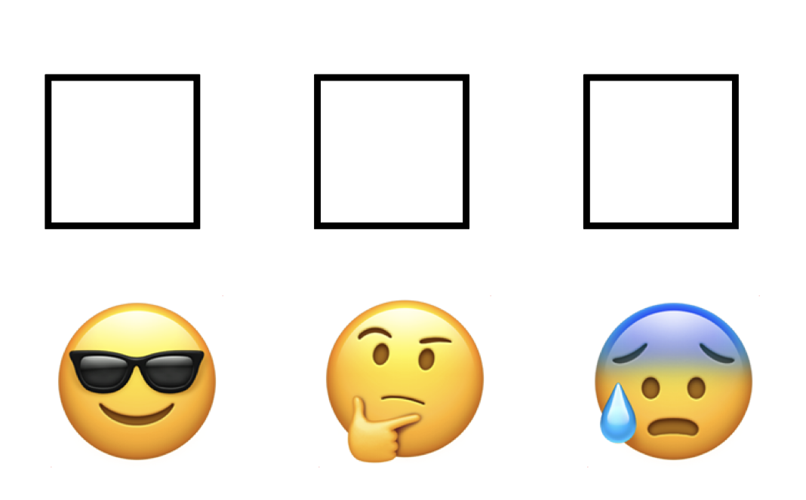
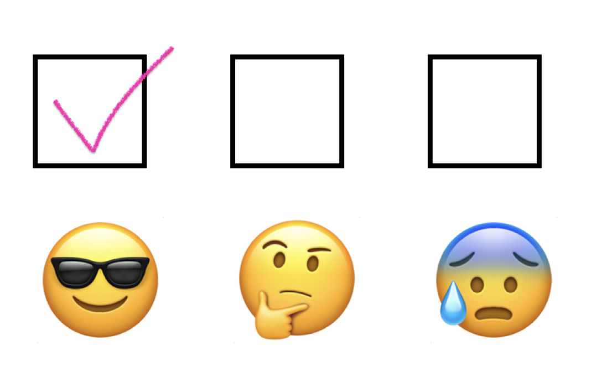
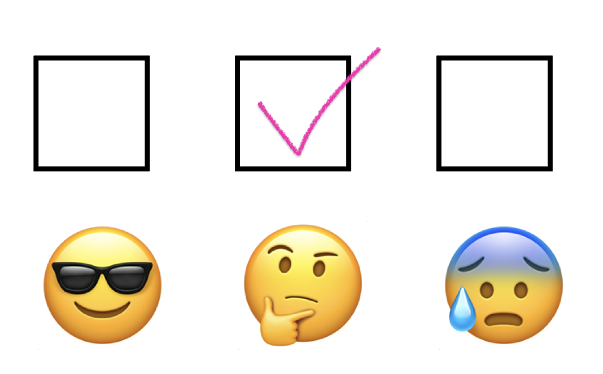
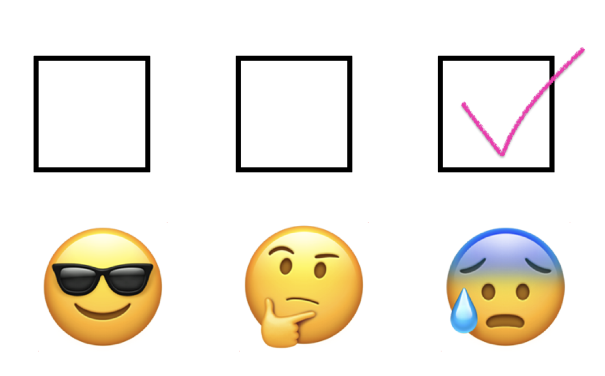

Homework 3
Instructions
- Download a printable version of this assignment here. Print it out and record your answers directly in the space provided.
- Write your name and student number on the top of the assignment.
- For problems requiring additional written work, use the allotted work space and/or margins of the page.
- Once you’re done with a problem, reflect on how you well-equipped you felt answering that particular problem using the confidence level assessment shown below.




- Turn in your assignment in class on the due date.
Questions
Question 1
The following students are enrolled in a course in Introductory Sociology. They are listed along with their year in school and whether or not they are majoring in sociology.
| Student | Year | Sociology major? |
|---|---|---|
| 1 | Sophomore | Yes |
| 2 | Senior | No |
| 3 | Junior | Yes |
| 4 | Freshman | No |
| 5 | Freshman | Yes |
| 6 | Sophomore | Yes |
| 7 | Sophomore | Yes |
| 8 | Junior | No |
| 9 | Sophomore | Yes |
| 10 | Sophomore | No |
What is the probability of selecting at random:
- a sophomore?
_____________________________________ - a student majoring in Sociology?
_____________________________________ - a freshman or a sophomore?
_____________________________________ - a student who is not a freshman?
_____________________________________
Question 2
A student taking a midterm exam in Ancient History comes to two questions pertaining to a lecture that he missed, and so he decides to take a random guess on both questions. One question is true-false and the other is multiple choice with five possible answers. What is the probability of guessing…
What is the probability of selecting at random:
- the correct answer to the true/false question?
_____________________________________ - the correct answer to the multiple choice question?
_____________________________________ - the correct answers to both the true/false question and the multiple choice question?
_____________________________________ - the incorrect answers to both the true/false question and the multiple choice question?
_____________________________________ - the correct answer to the true/false question and the incorrect answer to the multiple choice question?
_____________________________________ - the incorrect answer to the true/false question and the correct answer to the multiple choice question?
_____________________________________
Question 3
Research has shown that 6 out of 10 marriages end in divorce. What is the probability that…
- a particular just-married couple will stay married “until death do them part”?
_____________________________________ - two different randomly selected couples both remain married “until death do them part”?
_____________________________________ - two different randomly selected couples both get divorced?
_____________________________________
Question 4
The Superior Test of Achievement (STA) is standardized to be normally distributed with a mean μ = 500 and a standard deviation σ = 100. What percentage of STA scores falls…
- between 500 and 600?
_____________________________________ - between 400 and 600?
_____________________________________ - between 500 and 700?
_____________________________________ - between 300 and 700?
_____________________________________ - above 600?
_____________________________________ - below 300?
Question 5
Suppose that at a large state university, statistics tutors are paid by the hour. Data from the personnel office show the distribution of hourly wages paid to statistics tutors across the campus to be roughly normal with a mean of $12.00 and a standard deviation of $2.50. Determine…
- the percentage of statistics tutors who earn an hourly wage of $15 or more.
_____________________________________ - the probability of selecting at random from personnel files a statistics tutor who earns an hourly wage of $15 or more
_____________________________________ - the percentage of statistics tutors who earn between $10 and $12 per hour.
_____________________________________ - the probability of selecting at random from personnel files a statistics tutor who earns between $10 and $12 per hour.
_____________________________________ - the percentage of statistics tutors who earn an hourly wage of $11 or less.
_____________________________________ - the probability of selecting at random from personnel files a statistics tutor who earns an hourly wage of $11 or less.
_____________________________________ - the probability of selecting at random from personnel files a statistics tutor who is extreme in either direction – earning either $10 or below or $14 or above.
_____________________________________ - the probability of selecting at random from personnel files two statistics tutors whose hourly wages are less than average (mean).
_____________________________________ - the probability of selecting at random from personnel files two statistics tutors whose hourly wages are $13.50 or more.
_____________________________________ - the two dollar amounts that define the hourly wages received by the middle 95% of statistics tutors.